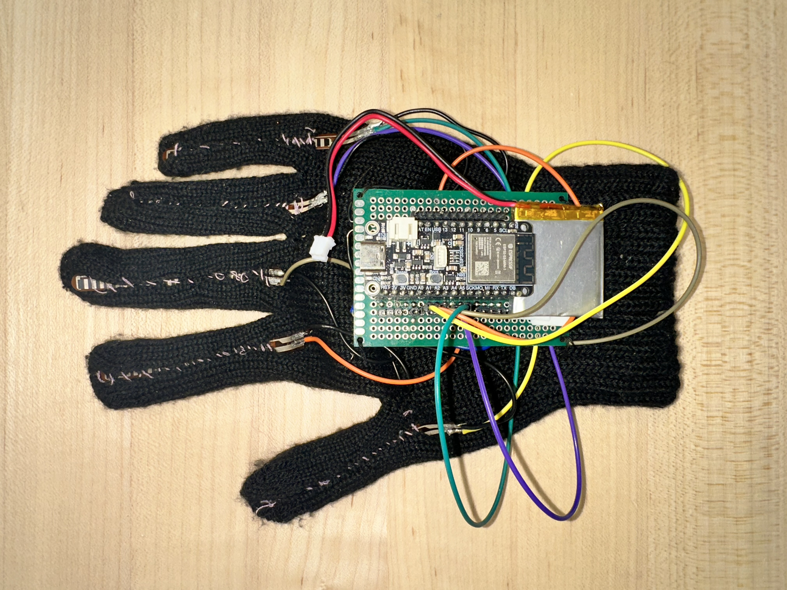
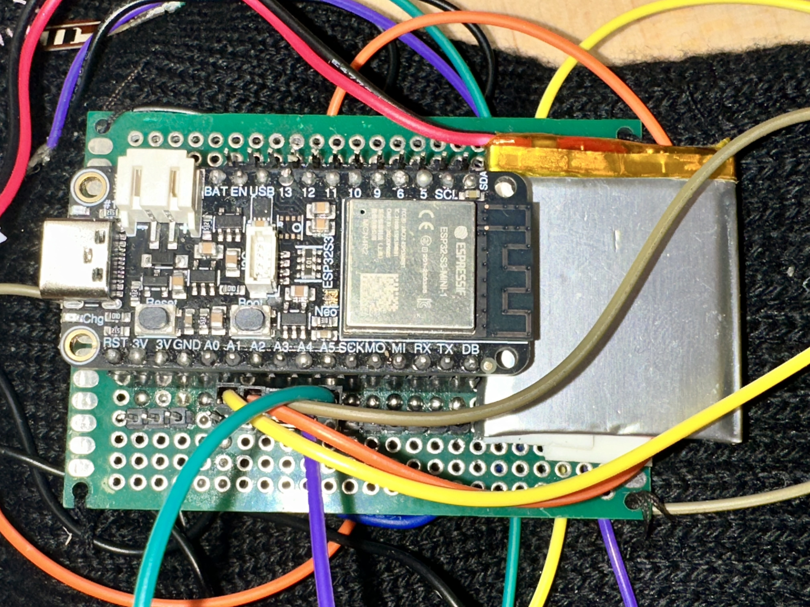
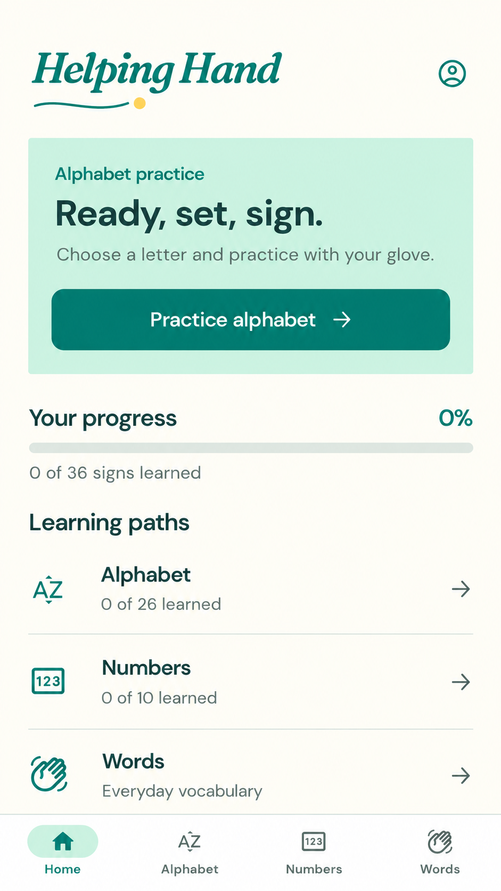
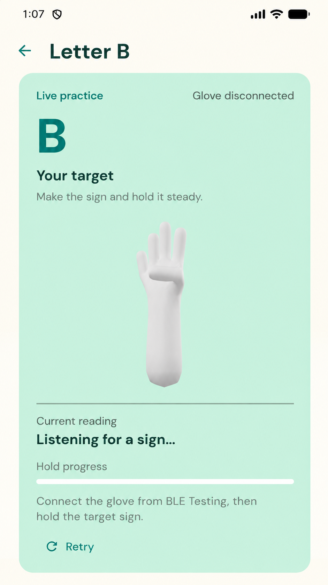
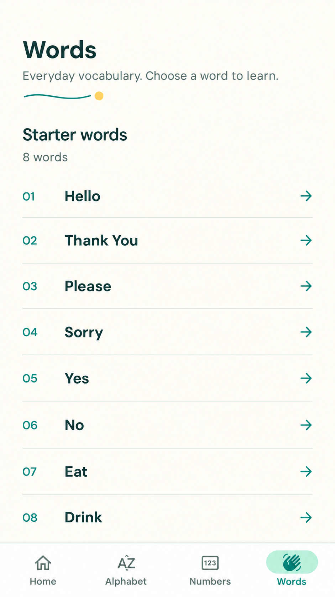

A board made for the glove
Custom PCB and final mounting.
Assembly photo pending
Post-mortem · November 19, 2026
ASL practice.
Feedback from your own hand.
A reference shows the sign.
Our goal is feedback on your attempt.

Speaker: TBD · 25 seconds.
We built Helping Hand to connect a learner's own signing attempt to feedback. Books and ordinary prerecorded references show a sign, but do not measure that learner's hand. Our glove and app aim to make practice more responsive. Introduce the team and transition to the system.
Draft: the photo shows the October beta glove, not the final PCB assembly. Replace it when available. We have not measured human learning improvement.
The system
Finger bending and motion become a practice response.
Five flex sensors
+ IMU readings
Capture readings
+ static recognition
Stream sensor
and prediction data
Word recognition
+ saved progress
Classify a held hand configuration.
Classify a complete word attempt.
Speaker: TBD · 30 seconds.
Flex sensors capture bending; the IMU captures motion. The ESP32 reads them and performs current static recognition. BLE carries packets to Flutter, where complete word attempts run through a TCN and the app saves progress. The intended final loop adds haptic guidance.
Draft: the dashed line is a conceptual planned return path, not an implemented app-to-glove command claim. Update the diagram to the actual haptic trigger source and final architecture.
Physical engineering
Final-build goals: PCB, new IMU, and feedback you can feel.

Custom PCB and final mounting.
Assembly photo pending
ICM-20948 accelerometer, gyro, magnetometer.
On-glove results pending
Planned: five finger + five dorsal piezos.
Final cue behavior pending
Speaker: TBD · 35 seconds.
Use this slide to explain the finished physical design once available: why the PCB matters, how the new IMU is mounted, and what the piezos communicate. Focus on two or three decisions and their actual outcomes. These October photographs reserve the layout; they do not show the final PCB or new IMU assembly.
Draft: replace photos, pending labels, and goals with the actual final construction and observed behavior. Receiving an IMU does not establish orientation-fusion benefits; piezo control alone does not establish useful tactile guidance.
The learner experience



October UI references · practice screen is disconnected.
Replace with final connected-practice and completion screens.
November 19 recognition target
Current: 34 static classes + 3 trained words.
Eight-word expansion and motion letters J/Z pending.
Practice loop
Select → attempt → feedback → save
Final measurements
[Add fresh results, trial scope, and phone latency]
Speaker: TBD · 35 seconds.
The learner chooses a target, practices, receives feedback, and saves completion. Our intended final coverage is A-Z, 0-9, and Hello, Thank You, Please, Sorry, Yes, No, Eat, Drink. A pose is a held configuration; a sequence includes how it changes over time.
Draft: only Hello/Please/Yes are currently trained. The recorded static model has 34 classes excluding J/Z. Update supported coverage, model explanation, results with scope, and current screenshots after development. The third image is a word picker, not evidence that a new word was completed. Do not describe 80% confidence as 80% measured accuracy.
Helping Hand in action
Live glove + phone · 90 seconds
Final targets and haptic sequence to rehearse.
Wearer: TBD · Phone operator: TBD · Narrator: TBD · 90 seconds.
0-10 seconds: show the worn glove and prepared target. 10-40: attempt a rehearsed static sign, show actual feedback, adjust, and complete if supported. 40-70: perform a complete word and show the real prediction. 70-90: show saved completion; include a short extra target only if timing permits.
Draft: use the real final haptic meaning. If it only indicates success/error, explain that. Do not guarantee a successful recognition. If a step fails, describe the observed failure, try a short recovery, and continue showing available live use. Login, BLE connection, projection, and props should be prepared beforehand. The slide does not establish measured learning improvement.
What went well
01
02
03
Confirm three distinct stories and the team's explanation of why each approach worked.
Speakers: TBD · 70 seconds, about 23 seconds per story.
Story 1: integration connects sensing to a useful practice response and saved progress. Historical team observations report signs completed and corresponding Firebase progress. Confirm which shared contract, test, or coordination decision made this work; do not invent a team-process explanation.
Story 2: static poses do not represent whole-word motion. The team recorded real attempts, compared TCN/CNN-GRU/CNN-LSTM, selected a small TCN, and integrated complete-attempt inference. Hello/Please completion was reported in October. Update with final eight-word outcomes if delivered.
Story 3 is a draft slot for the final wearable integration. Explain the actual PCB/haptic/IMU outcome and why the approach worked once finished. If another collaboration or technical story is stronger, replace it. No improved reliability or learning result is established merely by completing a feature.
What we would change
Bad readings complicate recognition
and make old results harder to reuse.
Check signals early and often.Track mounting, calibration, and changes.
Few trials, similar signs, and variable timing
limit what a model result can establish.
Plan data coverage with the features.Use fresh attempts and include failure cases.
Changes to the glove affect the full loop.
[Add one concrete team example]
Integrate smaller pieces sooner.Agree interfaces and leave time for live use.
Add what actually happened, why it was difficult, and how the team responded.
Speakers: TBD · 70 seconds, about 23 seconds per story.
1. The team reported thumb/index flex faults. Explain the actual symptoms, impact, replacement/calibration response, and the earlier checks we would use next time. Do not infer that every historical recording was faulty.
2. Historical word data contain 15 attempts from the reported wearer. Timing and coverage matter: later audits found center trimming in 7/15 attempts. Explain one actual difficulty and the final response if it is evaluated; do not claim longer windows improved accuracy without results.
3. Supply a concrete PCB/IMU/haptic or software handoff example from the team. The difficulty and proposed smaller integration steps are reflection candidates, not a proven explanation of delays. A challenge can be discussed even if it is solved before November 19.
Helping Hand
The glove, recognition, and app are one experience.
Speaker: TBD · 15 seconds.
Close with the strongest supported final capability, its main limitation, and the lesson that represents the semester. Proposed theme: the learner experiences the whole sensing-feedback loop, so integration must be tested as a whole. Leave this slide visible for questions.
Draft: add the actual final outcome and limit; do not imply all targets or corrective haptics are already validated. Questions occur throughout the seven minutes, not in a separate assumed allowance.
Coverage and scope
| Area | Documented baseline | Intended final coverage |
|---|---|---|
| Letters + numbers | 34 recorded static classesJ/Z excluded; legacy 36-class baseline retained. | A-Z and 0-9Add actual motion-letter path and per-sign results. |
| Words | Hello, Please, YesTCN; explicit Start attempt / Finish sign. | Eight app wordsHello, Thank You, Please, Sorry, Yes, No, Eat, Drink. |
| Wearable | New parts received; software support preparedRepaired assembly validation unconfirmed. | Mounted PCB + ICM-20948 + hapticsAdd final photos and observed feedback behavior. |
Scope every final claim to the tested wearer, configuration, targets, and conditions. A supported label list is not a per-class accuracy result.
Backup only · not part of the prepared 6:10.
Use to explain the distinction between November 6 implementation and intended November 19 scope. Today all eight word pages exist, but only three words are trained. Update this table after final integration and evaluation. Do not present historical records as current repaired-glove evidence.
Technical questions
Final evaluation fields · keep the wearer and whole-attempt scope visible.
[Targets, attempts, wearer,
split, configuration]
[Per-sign completion,
false completions, F1]
[Model bytes, phone latency,
delivered packet rate]
Historical reserved test: 3/3 correct, macro F1 1.00. This tiny offline result does not establish general accuracy; after further tuning, old attempts are development/regression evidence.
Fresh assembled-glove recognition and intended-phone latency: Not run in the current record.
Update this slide for the final model rather than inheriting old results.
Backup only · not part of the prepared 6:10.
The historical TCN input is 96 samples at 40 Hz with 11 raw features, device-clock resampling, center trim/edge pad, and training-only standardization. No deployed magnetic features or orientation fusion. Historical size is 48,324 bytes, with 15 real attempts and a 9/3/3 whole-trial split. Three test trials are not evidence of generalization. Do not use desktop/emulator latency as intended-phone latency.
Draft: fill final measurement slots only with recorded results and source links. An 80% confidence acceptance threshold is an implementation rule, not measured accuracy or a correctness probability calibration.